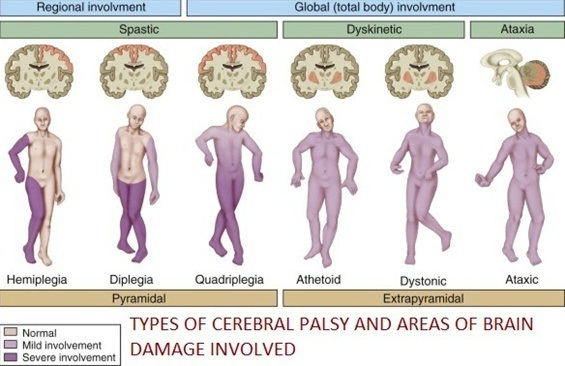

Cerebral Palsy (CP) is a condition of impaired cerebrum (largest part of brain) function, or regarded as a condition of paralyzed cerebrum. Cerebrum is the coordination center of human's core activities, such as seeing, hearing, speaking, thinking, learning, and so on. Therefore, if the coordination center is impaired, the ability to perform core activities is also diminished.
People with CP have trouble in controlling their body parts, including both fine and gross motor functions, such as chewing, swallowing, grasping objects, and even walking. Their muscles are difficult to coordinate with the brain, so the CP sufferers often seen drooling and having stiff movements.
Until now, the real cause of CP has not been determined, but the following factors can increase the risk of children to suffer from CP:
a. Prenatal Factors (Before Birth / Labor)
- Mother taking excessive drugs/medications
- Occurrence of infection during pregnancy, such as rubella, toxoplasmosis, or other viral infections
- Trauma / falling during pregnancy
b. Natal Factors (At Birth / Labor)
- Premature birth
- Vacuum-assisted labor
- Lack of oxygen during labor
- Amniotic fluid poisoning
c. Post-natal Factors (After Birth / Labor)
- Trauma / falling
- Viral infections, such as meningitis
- Brain infections
- Recurrent seizures

1. SPASTIC TYPE
A. Hemiplegia
Hemiplegia / hemiparesis - a malfunction that causes the arm or leg on one side of the body looks weak or paralyzed
B. Diplegia
Diplegia / diparesis - a state where there is disrupted function of lower limbs (legs), while the arms and hands still look normal
C. Quadriplegia
Quadriplegia / quadriparesis – a state where all limbs are weak / withered
2. DYSKINETIC TYPE
A. Distonia
Dystonia - problem on the muscle posture / torso, such as bent / distorted
B. Athetoid
Athetoid – relatively a dominant problem in CP when there are involuntary (uncontrolled, unconscious) movements, especially on arms, legs and hands
3. ATAXIC TYPE
Ataxic has impact on the impairment of coordinated movement capability, balance and body posture. Walking gait is sometimes irregular and may occur with widening leg posture. Control of eye movements and depth perception is often compromised. Often, fine motor skills which require hand and eye coordination, such as writing, would be difficult to do.